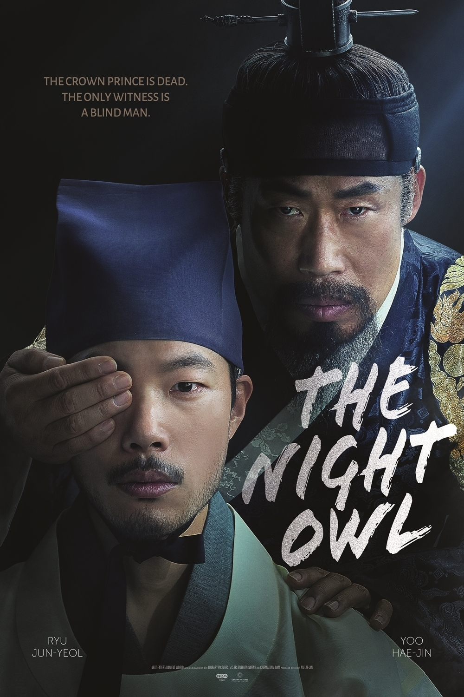
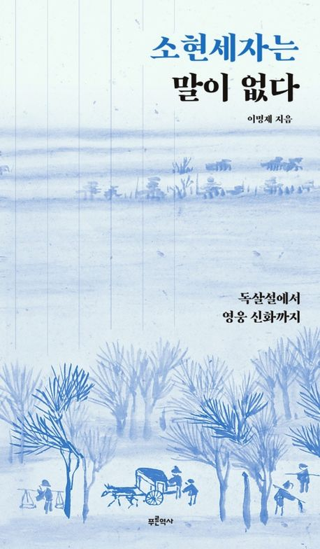
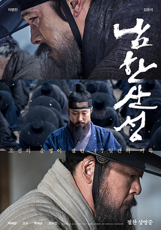

Prince Sohyeon of Chosŏn
昭顯世子 (1612–1645)
The eldest son and crown prince of King Injo, Sohyeon was held as a state hostage in Mukden for eight years following the Second Manchu Invasion, where he encountered Western learning and Catholicism through Jesuit missionaries.
Sohyeon's Death: Disease or Poison?

The mysterious circumstances surrounding Prince Sohyeon's sudden death in 1645 remain one of Korea's greatest historical mysteries. Was it natural illness or political assassination? This question continues to captivate historians and audiences alike.
Intellectual Legacy

Known for his exceptional scholarship and progressive thinking, Sohyeon advocated for institutional reforms and promoted Western knowledge through Catholic influence, making him a unique figure in Chosŏn intellectual history.
The Second Manchu Invasion

As a hostage during the Second Jurchen Invasion (1637), Sohyeon's experiences in Mukden profoundly affected him. His time as a captive became a defining moment that influenced both his thinking and his relationship with the Chosŏn court.
Chosŏn Royal Family Tree (宣祖 to 肅宗)
Prince Sohyeon's Path to Mukden (1637)
The Second Jurchen Invasion of 1637 (Byeongja Horan) forced Chosŏn's surrender and resulted in Prince Sohyeon's capture and transportation to Mukden, which would become his home for the next eight years.
Historical Context: The Byeongja Horan
In 1636, the Later Jin state (under the Qing) demanded Chosŏn's submission. When King Injo refused, the Qing army invaded, rapidly overwhelming Chosŏn's defenses. The royal court fled the capital (Seoul) and eventually took refuge at Namhan Sanseong fortress, a strategic mountain stronghold near Seoul. After a prolonged siege, facing starvation and military defeat, King Injo was forced to surrender in January 1637.
Journey to Captivity
Stage 1: Seoul to Namhan Sanseong (Late 1636)
When Qing forces invaded, the royal family fled Seoul northward. Prince Sohyeon was approximately 24 years old. The court made its way to Namhan Sanseong (남한산성), a fortress located south of Seoul in present-day Icheon, Gyeonggi Province. This journey took place during winter, adding to the hardship.
Stage 2: Namhan Sanseong Siege (December 1636 – January 1637)
The fortress was surrounded by Qing armies led by Hong Taiji. Despite stubborn resistance, the siege lasted about 47 days. Facing impossible odds and starving soldiers, King Injo decided to surrender on January 30, 1637. As part of the surrender agreement, Prince Sohyeon, along with other members of the royal family and officials, were designated as hostages to ensure Chosŏn's compliance with Qing demands.
Stage 3: Captives' Route to Mukden
After the surrender at Namhan Sanseong, Prince Sohyeon and other royal captives began their northward journey to Mukden (瀋陽), the capital of the Later Jin/Early Qing state. The journey covered approximately 900 km and likely took several weeks.
Surrender at Namhan Sanseong
King Injo surrenders after 47-day siege. Prince Sohyeon is designated as a state hostage.
Journey North
Sohyeon and other captives travel north through Korean territory toward Manchuria in winter conditions. The journey is arduous, with records indicating harsh treatment and difficult travel conditions.
Cross into Manchuria
The captive party crosses the northern border from Korea into Manchuria (present-day northeast China). Prince Sohyeon enters Jurchen-controlled territory.
Arrival in Mukden
After approximately 4–6 weeks of travel, Prince Sohyeon and the royal captives arrive in Mukden, the Later Jin capital. Sohyeon is now approximately 1,000 km from his homeland.
Life as a Hostage
Once in Mukden, Prince Sohyeon's status was complex. He was not treated as a common prisoner but rather as a high-value diplomatic hostage representing Chosŏn's commitment to the Qing. However, his freedom was extremely limited. Key aspects of his captivity included:
- Confined Residence: Sohyeon was housed in a designated compound but with strict movement restrictions.
- Diplomatic Function: His presence in Mukden served as a guarantee of Chosŏn's compliance with Qing suzerainty.
- Cultural Exposure: During his 8 years in Mukden, Sohyeon came into contact with Chinese imperial culture, Jesuit missionaries, and Western learning—experiences that would shape his later thinking.
- Correspondence: Limited communication with Chosŏn court was permitted, through which Sohyeon's intellectual development was documented.
Return Journey (1645)
After eight years of captivity, Prince Sohyeon was released in early 1645. The return journey from Mukden back to Seoul retraced the captives' original northward route but in reverse. Sohyeon departed Mukden in early 1645 and arrived back in Chosŏn just months before his sudden death in June 1645.
Geographic Significance
The journey from Seoul to Mukden spanned approximately 900 kilometers across Korean peninsula and into Manchuria. Key waypoints along the route included:
| Location | Present-day Area | Significance |
|---|---|---|
| Seoul (漢城) | Seoul, Korea | Chosŏn capital; starting point |
| Namhan Sanseong (南漢山城) | Icheon, Gyeonggi Province, Korea | Site of surrender in 1637 |
| Gaeseong (開城) | Kaesong, North Korea | Ancient Goryeo capital; on route northward |
| Pyongyang (平壤) | Pyongyang, North Korea | Major Korean city on northward route |
| Yalu River (鴨綠江) | Korean-Manchurian border | Border crossing into Jurchen territory |
| Mukden (瀋陽) | Shenyang, Liaoning Province, China | Later Jin capital; destination (8-year captivity) |
Chronological Line of Prince Sohyeon's Life
A detailed timeline of major events in Prince Sohyeon's life, from birth to death and their historical significance.
Birth of Prince Sohyeon
Born as the eldest son of King Injo (仁祖) and Queen Han (Consort of the Inner Court). Chosŏn was entering a period of political and military instability. The birth of an heir was considered auspicious but the prince was born during a time of increasing tension with the Later Jin state.
Designation as Crown Prince (世子)
At age one, Sohyeon was formally designated as Crown Prince, the official heir apparent to the Chosŏn throne. This initiated his education under the best scholars and officials of the realm.
Years of Scholarship and Education
Sohyeon received an exceptional education covering Confucian classics, history, astronomy, mathematics, and languages. He became fluent in Chinese and was noted for his exceptional intelligence and scholarly abilities. Court records indicate he mastered diverse subjects and showed unusual openness to diverse intellectual traditions.
First Jurchen Invasion (丁卯胡亂)
The Later Jin state invaded Chosŏn. Though successfully repelled, this was a warning sign of greater threats to come. At age 15, Sohyeon would have been aware of the military crisis facing his kingdom.
Second Jurchen Invasion (丙子胡亂) – The Crisis
The Later Jin (renamed Qing in 1636) invades Chosŏn with overwhelming force. King Injo flees Seoul and takes refuge at Namhan Sanseong fortress. After a 47-day siege, facing starvation, Injo is forced to surrender on January 30, 1637. Prince Sohyeon, age 24, is designated as a state hostage to guarantee Chosŏn's submission.
Eight Years of Captivity in Mukden
Sohyeon is transported to Mukden, the Qing capital, where he is held as a political hostage. During these eight years, he is exposed to Qing imperial culture, Chinese intellectual traditions, and Western learning through Jesuit missionaries. This period profoundly shapes his thinking and worldview. He becomes exposed to Catholic theology and Western scientific knowledge—influences that would later make him controversial in conservative Chosŏn society.
Release and Return to Chosŏn
After eight years, Sohyeon is released as part of improving Qing-Chosŏn relations. He undertakes the long journey back from Mukden to Seoul, retracing the route of his captivity. His return to court is initially celebrated but quickly becomes the subject of intense controversy.
Return to Court and Controversy
Upon returning to the Chosŏn court, Sohyeon advocates for reforms and demonstrates openness to Western learning and Catholicism—radical positions that deeply shock conservative scholars and officials. The debate (鄂論 or Oron) over his ideas becomes heated. Some officials and scholars view his proposals as dangerous innovations that threaten Chosŏn's Confucian order, while others see him as a visionary reformer.
Sudden Death of Prince Sohyeon
Prince Sohyeon dies unexpectedly on June 15, 1645, at age 33, just months after his return to Chosŏn. Official records attribute his death to illness (possibly smallpox or another epidemic disease), but contemporary accounts and later historians have speculated about possible assassination or poisoning given the political controversy surrounding his return and proposed reforms.
Political Aftermath and Succession Crisis
Sohyeon's death immediately creates a succession crisis. His young son, later known as King Hyeonjong, becomes the new heir apparent. The court splits into factions debating the cause of Sohyeon's death and how to interpret his legacy. Some conservative scholars successfully marginalize his reform agenda, while his supporters struggle to preserve his memory and influence.
Post-Sohyeon Era – Factionalism and Conservative Consolidation
After Sohyeon's death, conservative factions within the Chosŏn court dominate. The intellectual openness and reform ideas associated with Sohyeon are suppressed. His supporters face political persecution, and the court returns to orthodox Confucian positions. The questions surrounding his death remain unresolved, and his legacy becomes increasingly contested.
Hyeonjong's Reign (Sohyeon's Son)
Sohyeon's son reigns as King Hyeonjong, becoming an indirect heir to his father's legacy. However, the deep factionalism of the court and the conservative reaction against Sohyeon's ideas continue to shape Chosŏn politics during this period.
Historical Scholarship and Legacy
Sohyeon's life and death continue to fascinate historians and scholars. Different interpretations emerge: some see him as a visionary ahead of his time who understood the need for reform and modernization; others view him as a dangerous figure whose Western sympathies threatened Chosŏn's cultural identity. Modern Korean historians continue to debate his role in Korean intellectual history and the true cause of his death.
身死之後：立長還是立嫡？
朝鮮仁祖二十三年（1645年） 歸國不久的昭顯世子暴斃宮中 宗法與權力的齒輪開始瘋狂轉向 仁祖晚年體衰，欲立次子鳳林大君以穩宗統 但此舉違背了大臣對於冊立世孫的願望 立嫡派、立長派與中立者的激烈辯論即將開始 歷史的轉折，自此展開。
The twenty-third year of King Injo's reign (1645) — Crown Prince Sohyeon dies suddenly upon his return home. The gears of lineage law and power begin to spin wildly. Weakened by age, King Injo wishes to elevate his younger son, the Prince of Pongnim, to secure the dynasty's future. Yet this decision contradicts the ministers' wish to appoint the royal grandson as heir. A fierce debate between the traditionalist and reformist factions — and the neutral party — is about to unfold. The turning point of history begins here.
互動卡牌遊戲 · Interactive Card Game Experience
進入卡牌遊戲 → Open Card GameThe Injo Controversy: Debates Surrounding Prince Sohyeon
Prince Sohyeon's return to Chosŏn in 1645 sparked intense controversy centered on his ideas, his exposure to Western learning and Catholicism, and the circumstances of his sudden death. This section explores the major debates.
1. The Cause of Death: Natural Illness or Assassination?
Official Position (Court Records)
Official Chosŏn court records attribute Prince Sohyeon's death to sudden illness, possibly smallpox or another epidemic disease. This was the position endorsed by the court physicians and accepted in the initial official histories.
Assassination Theory
Many contemporary accounts and later historians have speculated that Sohyeon was poisoned or assassinated due to the intense political controversy surrounding his return. Several factors support this theory:
- The sudden nature of his death (just months after return) at a relatively young age (33)
- The extreme political controversy generated by his proposed reforms
- Reports from the time suggesting suspicious circumstances
- The fact that his death conveniently eliminated a politically divisive figure
- Conservative factions' strong opposition to his Western sympathies
Historical Assessment: Modern scholars remain divided. The truth of Sohyeon's death may never be definitively established, as evidence is fragmentary and later records may have been revised for political reasons.
2. His Exposure to Western Learning and Catholicism
The Progressive View
Some scholars argue that Sohyeon's exposure to Western knowledge and Catholicism made him a visionary intellectual ahead of his time. According to this interpretation:
- He recognized the need for reform and modernization to strengthen Chosŏn
- His openness to Western learning was pragmatic, not ideological
- His advocacy for religious tolerance showed moral courage
- Had he lived, he might have guided Chosŏn toward earlier modernization
The Conservative View
Conservative scholars and officials of his time (and some modern historians) argued that his Western sympathies were dangerous:
- Catholicism was fundamentally incompatible with Confucian orthodoxy
- Western learning threatened Korean cultural identity
- His proposed reforms would undermine royal authority and established order
- His views were acquired during captivity and represented "barbarian" contamination
3. King Injo's Role and Responsibility
Questions About Injo's Authority
Some historians debate whether King Injo bore responsibility for his son's death or circumstances:
- Did Injo order Sohyeon's death? – Some historians speculate that Injo, facing court pressure, may have authorized Sohyeon's elimination.
- Could Injo have prevented his death? – If assassination occurred, could the aging king have protected his son against conservative factions?
- Injo's own guilt: Having surrendered to the Qing (a deeply shameful act in Confucian terms), did Injo project his failure onto his son?
The Qing Connection
Another debate centers on whether Qing interests were involved in Sohyeon's death:
- Could the Qing have wanted to eliminate a potentially reform-minded heir?
- Did the Qing prefer a more conservative Chosŏn?
- What was the significance of Sohyeon's eight years of exposure to Qing court and culture?
4. The Oroan (鄂論) Controversy
The "Oroan" or factional debate (also called the "Sohyeon Controversy") that erupted after his return centered on several issues:
Religious Tolerance vs. Orthodoxy
Sohyeon's openness to Catholicism shocked orthodox Confucians who saw the faith as incompatible with Chosŏn values. The debate reflected deeper questions about how Chosŏn should respond to foreign ideas.
Institutional Reform vs. Preservation
Sohyeon proposed various institutional reforms based on his observations of Qing governance. Conservative officials opposed these as threats to the established order. The debate exposed tensions between those who believed Chosŏn needed reform and those who defended the status quo.
Royal Authority and Succession
Questions arose about succession and the extent of the crown prince's authority. Could a crown prince advocate policies that contradicted the king's directives? How should succession be managed if the heir and king disagreed fundamentally?
5. His Legacy: A Reformer or a Threat?
Modern Scholarly Interpretations
| Interpretation | Key Arguments | Historical Significance |
|---|---|---|
| Visionary Reformer | Sohyeon was ahead of his time, recognizing the need for reform and modernization to face Western and Qing threats. | Had he lived, Chosŏn might have embarked on earlier modernization, potentially strengthening the dynasty. |
| Conservative Threat | His Western sympathies and religious heterodoxy threatened the foundation of Confucian Chosŏn society. | His elimination allowed the conservative consolidation that defined late Chosŏn. |
| Tragic Victim | Sohyeon was a brilliant prince caught in political forces beyond his control, destroyed by factionalism. | His death exemplifies the destructive nature of Chosŏn factionalism and the cost of political division. |
| Qing Pawn | Sohyeon's eight years in Mukden were designed by the Qing to make him a more compliant vassal. His Western sympathies served Qing interests. | His death might have been orchestrated to prevent a reformer from weakening Chosŏn's subservience to the Qing. |
Conclusion: Unsolved Mysteries
Prince Sohyeon remains one of Chosŏn's most enigmatic figures. Several fundamental questions remain unanswered:
- How did he really die? Was it natural illness, assassination, or poisoning?
- What were his true intentions? Was he a genuine reformer or a Qing agent?
- What would Chosŏn have been like if he had lived? Would his reforms have strengthened or weakened the kingdom?
- What is his true legacy? Should he be remembered as a visionary or a cautionary tale about the dangers of foreign ideas?
These questions continue to animate historical scholarship on Prince Sohyeon, ensuring that he remains a fascinating and contested figure in Korean history.